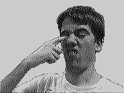
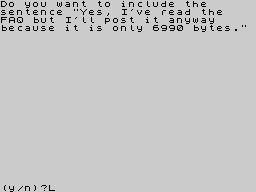

|
This is a murky world of mostly BASIC programs and ASCII characters. By all accounts all of the entries for 1996 were serious attempts by novice programmers to get their PC to do something... anything... quite a few of the programs date back to 1983 and 1984 and you can't help but applaud the efforts of these geeks of lore. One entry - Surround - has no enemies but yourself in an empty room, and all you have to do is avoid yourself and the walls. Woe betide if you want instructions...you have to wait 15 seconds for a pretty pattern to fill the screen then press a key to see a new screen of instructions. Had this been entered for the 2000 compo it would be considered class.
 The whole point of the CSSCGC is to apply modern thinking to ancient mechanics, executed in the worst possible manner. As a result, the games are given splendid titles such as Advanced Road Rage Simulator - M4 Joyrider Edition (1997). Excellent. Competitors are invited to dust down their own old programs, or to write new ones, with the emphasis being on crapness. The standard of entries therefore, is excellent. Boing (1997) sees you guide your 'o' around the screen, bouncing about to gather static '#'s while avoiding '$'s...take it away, take it away! The whole point of the CSSCGC is to apply modern thinking to ancient mechanics, executed in the worst possible manner. As a result, the games are given splendid titles such as Advanced Road Rage Simulator - M4 Joyrider Edition (1997). Excellent. Competitors are invited to dust down their own old programs, or to write new ones, with the emphasis being on crapness. The standard of entries therefore, is excellent. Boing (1997) sees you guide your 'o' around the screen, bouncing about to gather static '#'s while avoiding '$'s...take it away, take it away!
It's not all ASCII and UDG's though. Poke Alex In The Eye (1998) uses digitised images, and the 'Auto Poke' mode in which Alex pokes himself in the eye and you do nothing but watch is inspired. It had me hooked for a whopping 30 seconds. Also from 1998 came One Dimensional Tetris, which actually squeezed a right laugh out of me.
One of my faves from the 1997 competition is Caves Of Mondonia which is only playable by speeding up the emulator. There are two jump keys, one for each direction, and your bloke disappears when climbing a ladder. Shite was never so much fun.
In Advanced Binary Simulator (1998) I posted a message with a hacked, uncompressed version of Z80 to CSS, and received 30 replies, 3 of which had Windows 95 attached. It is pointless merriment like this that gives these crap games a permanent home in a corner of your hard drive.
|